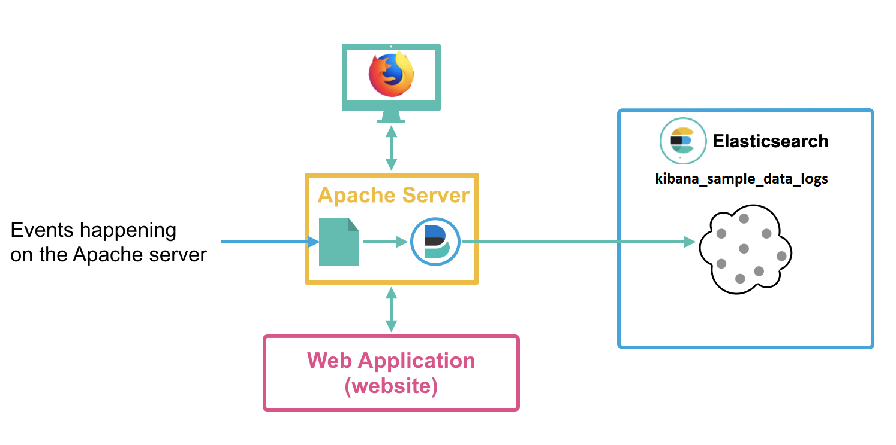

Acceda a el link de kibana e inicie sesión seleccionando la opción Log in with
Elasticsearch:
Ingrese sus credenciales del usuario Elastic:
Haciendo click en el menú lateral encontrara la sección dedicada a las features de kibana
Dashboard, Visualize, Maps, Discover:
Seleccione la opción Ingest your data:
Seleccione la opcion Sample Data:
Seleccione la opcion Add data en los tres Datasets disponible:
Ingrese a la sección de Discover en el menú lateral izquierdo:
Seleccione el index pattern kibana_sample_data_flights
Seleccione el rango de tiempo de la ultima semana
Añada a la tabla de documentos los campos Carrier, OriginCityName,
OriginCountry y OriginWeather
Ordene los documentos unicamente en orden alfabetico de la A a la Z, segun el Pais
de origen (OriginCountry)
Usando KQL añada un filtro para que unicamente se muestren los documentos del
Carrier Logstash Airways con ciudad de destino Dubai
Carrier:"Logstash Airways" and DestCityName:"Dubai"
Remueva el filtro creado en el punto anterior y cree los filtros equivalentes usando la herramienta
de Filter
Ingrese a la sección de Visualize Library en el menú lateral izquierdo:
Seleccione Create visualization:
Seleccione Lens:
Seleccione el index pattern kibana_sample_data_flights
Seleccione el rango de tiempo de la ultima semana
Cree una visualización de diagrama de barras que muestre el valor promedio del tiquete
(AvgTicketPrice) por cada dos días de la última semana.
Cree una visualización de diagrama de barras que muestre los paises de destino
(DestCounty) a los que mas tiempo en minutos toma llegar
(FlightTimeMin).
Haga que la visualización que creo en la tarea anterior muestre unicamente el
Top 10 de paises
y desarollar las habilidades que l permitan realizar busquedas
precisas y usar herramientras como Fuzzy Search, Reguex ó
wildcars
Ingrese a la sección de Discover en el menú lateral izquierdo:
Seleccione el index pattern kibana_sample_data_logs
Seleccione el rango de tiempo de la ultima semana
Usando KQL añada un filtro para que unicamente se muestren los documentos en los
cuales
el Host sea elastic y que sean peticiones tipo GET
host.keyword : *elastic* and message : *GET*
Usando KQL añada un filtro para que unicamente se muestren los documentos en los
cuales
la ip del cliente comience con 120.56.165
clientip :120.56.165.0/18
Usando el lenguaje de busquedas de Lucene añada un filtro para que le permita
encontrar los documentos que contienen
AppleWebKit buscando ApleWeKyt en el campo agent
agent : *ApleWeKyt~3*
Usando el lenguaje de busquedas de Lucene añada un filtro que muestre unicamente
los documentos los documentos en
los cuales
el Host sea elastic, que sean peticiones tipo GET, ó los
documentos en los cuales
la ip del cliente comience con 120.56.165 Estos deben verse de primeras.
request:"/beats"^2 or host.keyword : *elastic* and message : *GET*
en operaciones sobre texto
Ingrese a la sección de Discover en el menú lateral izquierdo:
Seleccione el index pattern kibana_sample_data_logs
Seleccione el rango de tiempo de la ultima semana
Usando KQL busque los documentos que contengan FIREFOX
en el campo message
message: "*FIREFOX*"
Usando KQL busque los documentos que contengan Firefox
en el campo message. ¿Al hacer ese cambio en la busqueda la cantidad de documentos
cambia?
message: "*Firefox*"
Usando KQL busque los documentos que contengan elastic
en el campo host.keyword
host.keyword : *elastic*
Usando KQL busque los documentos que contengan ELASTIC
en el campo host.keyword. ¿Al hacer ese cambio en la busqueda la cantidad de
documentos cambia?
host.keyword : *ELASTIC*
¿Por que en un caso cambio la cantidad de documentos y en el otro no?
Al realizar la busqueda en un campo de tipo Keyword se esta realizando una
busqueda sobre un campo no analisado eso hace que la busqueda deba ser exacta y no contemple
herramientas de analsisis como la equivalencia entre busqueda en minúsculas y mayúsculas
Ingrese a la sección de Discover en el menú lateral izquierdo:
Seleccione el index pattern kibana_sample_data_flights
Seleccione el rango de tiempo de la ultima semana
Cree un filtro que unicamente muestre los vuelos que recorrieron mas de 700 Millas
Usando la herramienta de filtros cree un filtro muestre todos los vuelos de las aerolinas del punto
anterior que NO tienen como destino la ciudad de Dublin
Ingrese a la sección de Visualize Library en el menú lateral izquierdo:
Seleccione Create visualization:
Seleccione Agregation based:
Seleccione Metric:
Seleccione el index pattern kibana_sample_data_flights:
Seleccione el rango de tiempo de la ultima semana
¿Que representa el numero en pantalla?
La cantidad de documentos en la ultima semana
Haga que la visualización muestre el precio promedio de todos los tiquetes
(AvgTicketPrice)
Haga que la visualización muestre el precio promedio de los tiquetes
(AvgTicketPrice) por ciudad de destino (DestCityName)
Convierta la visualización del punto anterior en una visualización de tipo Pie
Ingrese a la sección de Visualize Library en el menú lateral izquierdo:
Seleccione Create visualization:
Seleccione Agregation based:
Seleccione Table:
Seleccione el index pattern kibana_sample_data_flights:
Cree una visualización de tipo Table que permita ver el top 10 de la duracion
promedio de los vuelos (FlightTimeMin) por ciudad de destino
(DestCityName)
Añada una tercera columna que muestre el precio promedio del tiquete
(AvgTicketPrice)
Cree una visualización de tipo Tag Cloud con las 50 ciudades mas visitadas
Modifique la visualización que creo en el punto anterior para que ahora muestre los 50 destinos a
los que mas tiempo se ha gastado viajando (FlightTimeMin)
Ingrese a la sección de Visualize Library en el menú lateral izquierdo:
Seleccione Create visualization:
Seleccione Agregation based:
Seleccione Line:
Seleccione el index pattern kibana_sample_data_logs:
Seleccione el rango de tiempo de la ultima semana
Seleccione el rango de tiempo de la ultima semana
Cree una visualización que muestre el numero total de Bytes (bytes) usados en
transacciones por dia
Haga que la visualización del punto anterior muestre lineas distintas por los 5 primeros host
(Host)
Modifique la visualización para que no muestre las lineas y use intervalos de una hora
Haga que la visualización Muestre el 10% de ratio de la suma de la memoria al momento de la
transacciones (machine.ram) en el tamaño de los puntos
Vaya al modulo de discover e intente ver los documentos.
Los documentos pueden parecer extraños pero no hay por qué preocuparse, los vamos a analizar y
entender.
Pero antes de todo, comprenderemos qué son los registros de apache.
Cuando se tiene un sitio web (o cualquier aplicación web) es muy común tener lo que se llama un
servidor web como Apache.
El servidor web Apache ayudará a manejar y entregar páginas web a los usuarios.
Este servidor Apache generará lo que llamamos logs, que son registros de los diferentes eventos que
suceden en el servidor Apache.
Un evento será, por ejemplo, que alguien acceda a una página web específica, más adelante veremos
qué tipo de información se registra.
Normalmente, así es como se implementa:

Demos un vistazo a los diferentes campos presentados en los logs de apache.
Empecemos con @timestamp, este campo es simplemente la fecha de cuando sucedió
el evento.
Los que comienzan por _ son lo que llamamos campos de metadatos, por ejemlo
dentro de estos se encuentra el id, nombre del indice, etc.
El campo agent contiene lo que se llama el agente del usuario. Cuando alguien
está navegando en internet, es muy util para el servidor web
saber que tipo de navegador está usando el usuario para adaptar su contenido. Así que se
verán datos como: Mozilla/5.0 (Windows NT 6.1; WOW64; rv:27.0) Gecko/20100101 Firefox/27.0
este agente de usuario quiere decir que alguien está accediendo a la página a través de
Firefox en Windows 7. Como se puede evidenciar,
este campo no es tan fácil de leer. Por lo tanto, es posible transformarlo para extraer más
información:
useragent.device Tipo de dispositivo que el usuario usó para acceder al
sitio.
useragernt.os Sistema operativo del usuario.
useragernt.name Nombre del navegador utilizado.
El campo bytes es usado para almacenar el numero de bytes que han sido usados
para procesar la petición del usuario.
El campo clientip es la ip del usuario que accedió al website. Basado en este
campo, es posible conocer información georeferenciada del usuario:
geoip.coordinates coordenadas geograficas del usuario.
geoip.location Sistema operativo del usuario.
También hay información sobre la geo localización del usuario como el origen de la
petición en geo.src y destino geo.dest
El campo referrer indica como el usuario llegó al website.
El campo request contiene información relativa a qué fue lo que el usuario
solicitó en la petición. Para resumir, el valor de este campo es la URL
solicitada por el usuario.
Ahora vamos a crear una visualización que va a representar la cantidad de logs por cada tipo de
response:
De click en el modulo de "Visualize" en el menú de navegación y cree una nueva visualización
de tipo Time Series Visual Builder.
Asegúrese que la visualización esté mostrando gráficas de barras en vez de lineales en
Data > Options > Chart Type.
Cambia al menú de Panel Options, en la parte derecha cambia el intervalo de
auto a 1y. Para el index pattern, cambia * por apachelogs*.
Para subdividir cada barra por codigo de respuesta, regrese al manú de Metrics. En el option
list de Group By, cambie el valor Everything por Terms.
En la opción By escoja el campo response. El resutado de esta
operación mostrará cada barra dividida en distintos tonos de verde.
Se puede escoger otro color, como por ejemplo naranja:
En vez de colorear las barras en distintos tonos del mismo color, es posible dividir la
gráfica en diferentes colores, dependiendo del codigo de respuesta.
Regrese nuevamente al menú de Options y cambié el valor de Split Color Theme de Gradient a
Rainbow.
Guarde la visualización.
Ingrese a la sección de Visualize Library en el menú lateral izquierdo:
Seleccione Create visualization:
Seleccione Create visualization:
Seleccione TSVB:
Seleccione Markdown:
Añada el siguiente contenido a la visualización de Markdown:
# Supervisión de vuelos
### Cantidad de vuelos:
### Distancia total de vuelos en Kilometros:
### Ciudades mas visitadas:
Seleccione kibana_sample_data_flights como index pattern:
Cree la metrica de cantidad de vuelos y añada el valor a la visualización:
### Cantidad de vuelos: {{ count.cantidad_vuelos.last.raw }}
Cree la metrica de cantidad de vuelos y añada el valor a la visualización:
### Distancia total de vuelos en Kilometros:
{{ sum_of_distance_kilometers.distancia_km.last.formatted }}
Ingrese a la sección de Visualize Library en el menú lateral izquierdo:
Seleccione Create visualization:
Seleccione Create visualization:
Seleccione TSVB:
Seleccione Top N:
Seleccione kibana_sample_data_flights como index pattern:
Cree una visualización que muestre el top 10 de ciudades de origen
(OriginCityName), segun cantidad de vuelos cancelados (Cancelled)
Ingrese a la sección de Visualize Library en el menú lateral izquierdo:
Seleccione Create visualization:
Seleccione Create visualization:
Seleccione TSVB:
Seleccione Table:
Seleccione kibana_sample_data_flights como index pattern:
Cree una tabla que muestre la cantidad de documentos por las distintas aerolinas
(Carrier)
Añada una columna que muestre la cantidad de km (DistanceKilometers) recorridos por
esa aerolinea (Carrier)
Añada una columna que muestre la cantidad total de dinero (AvgTicketPrice) obtenido
por esa aerolinea (Carrier)
Ingrese a la sección de Maps en el menú lateral izquierdo:
Seleccione Create Map:
En el servicio de mapas de elastic hay dos categorías diferentes, capas vectoriales y capas de
teselas. Las capas de mosaicos son la base del mapa, te muestra el mapa del mundo, los diferentes
países, calles, restaurantes, bares, etc. una capa de mosaico sería una colección de imágenes
estáticas que forman un "mosaico" en la cuadrícula para hacer una imagen coherente. Acerque y aleje
el
mapa para ver tu vecindario y ver qué tan preciso es el mapa.
Mueva el mapa y enfoque Estados Unidos, ahora haga lo mismo con Colombia. ¿Qué diferencias a nivel
de información que provee el mapa hay?
Estados unidos cuenta con la division politica por Estados
Añada una nueva capa con un mapa base desaturado
Haga que la capa base de mapa desaturado solo sea visible entre los zooms 8 y 24
Haga zom suficiente para que se vea la capa Road map - Desaturated en ese momento
mueva la capa Road map a la parte superior
Elimine ambas capas.
Ingrese a la sección de Maps en el menú lateral izquierdo:
Seleccione Create Map:
Seleccione el rango de tiempo de la ultima semana
Añada una capa llamada Destinos que muestre todas las ciudades de destino
(DestCityName) del index pattern kibana_sample_data_flights
Añada una capa llamada Ventas de tipo Heat Map que muestre la
locacion de las ventas
(geoip.location) del index pattern kibana_sample_data_ecommerce
Añada una capa llamada Vuelos de tipo Point to Point que muestre
las rutas tomadas por los vuelos del index pattern kibana_sample_data_flights
Mueva la capa Destinos a la parte superior y cambie el icono para que muestre
aviones de color azul en vez de puntos verdes. El tamaño de los aviones debe estar determinado por
la distancia en Kilometros (DistanceKilometers) con tamaños entre 1 y 24 px
Ingrese a la sección de Maps en el menú lateral izquierdo:
Seleccione Create Map:
Seleccione el rango de tiempo de la ultima semana
Añada una capa de tipo EMS Boundaries que cumpla las siguientes condiciones:
Usar la capa World Countries
Los campos Tooltips deben ser de tipo ISO 3166-1 alpha-2 code
Cree un Join con las sisguientes caractersicas
Left source: World Countries
Left field: ISO 3166-1 alpha-2 code
Rigth source: kibana_sample_data_ecommerce
Rigth field: geoip.country_iso_code
Rigth size: 65535
Haga que el Fill Color sea determinado por valor usando el Count de
registros. Use colores desde el azul al rojo
Añada una capa de tipo EMS Boundaries que cumpla las siguientes condiciones:
Usar la capa USA States
Los campos Tooltips deben ser de tipo name
Cree un Join con las sisguientes caractersicas
Left source: USA States
Left field: name
Rigth source: kibana_sample_data_ecommerce
Rigth field: geoip.region_name
Rigth size: 65535
Haga que el Fill Color sea determinado por valor usando el Count de
registros. Use gamas de azul como color
Añada una capa de tipo Cluster and grids
seleccione como index pattern kibana_sample_data_ecommerce y como campo Geoespacial
geoip.location
seleccione como index pattern kibana_sample_data_ecommerce y como campo Geoespacial
geoip.location
Añada una metrica de suma sobre el campo products.taxful_price con el nombre
total sales price
Haga que el campo muestre el valor de total sales price
Cambie la opacidad al 100%
Dirijase al módulo de Visualization y busque la visualización llamada: [Flights] Delays & Cancellations.
¿Qué información está brindando la visualización?
Está mostrando el ratio de vuelos retrasados en porcentaje y los eventos en los que un vuelo fue retrasado y cancelado.
Ahora revisemos el dashboard llamado [Flights] Global Flight Dashboard. ¿Cuántas visualizaciones hay en el dashboard?
Hay 18 visualizaciones.
Ahora dirijase al módulo de Canvas y abra el canvas de vuelos ([Flights]). Ver distintas visualizaciones pre construidas de canvas es un excelente modo
de entender cómo funciona este módulo. De click en Cancellations en el lado derecho de la presentación, después, deberías ver un panel que nuevo mostrandose. Da click
en el menú de data de este panel nuevo, ¿Qué query se está utilizando para crear la visualización?
SELECT COUNT(*) as total_cancellations
FROM kibana_sample_data_flights
WHERE Cancelled = true
Ahora que ya tiene un entendimiento de qué son logs y más especificamente, cómo funionan los logs de apache, vamos a intentar crear algunas visualizaciones
para representar esta información.
Cree una visualización que represente la cantidad de logs sobre el tiempo. Guarde la visualización y llámela visualization_1.
Cree una visualización con dos metricas en ella.
Promedio de bytes sobre el tiempo.
Suma de bytes sobre el tiempo.
Guarde la visualización y llámela visualization_2.
Cree dos mapas:
Una visualización que represente los paises mas frecuentes en cuanto a logs.
Una visualización que represente los paises con el promedio más alto de bytes descargados.
Guarde las visualizaciones y llamelas respectivamente visualization_3 y visualization_4.
Para crear el promedio, utilizar la siguiente configuración:
Vamos a crear más visualización sobre el index pattern kibana_sample_data_logs. Cree una visualización de barras horizontal que muestre
el agente más frecuente.
Del mismo modo, cree una visualización de barras horizontal que muestre las direcciones IP más frecuentes (clientip.keyword). Llámela
visualization_6
Cree una visualización de tipo markdown, llamada visualization_7 que muestre lo siguiente:
Ahora pongamos todo junto:
Cree un dashboard y añada todas las visualizaciones que acaba de crear.
Guarde el dashboard y llamelo: Apache logs dashboard
Ahora que el dashboard existe, compartamoslo con otros usuarios:
Cuando se habla de compartir, hay dos opciones:
Embedded code (iframe).
Permalink.
Escoja el permalink.
Seleccione saved object, copie el enlace y envíeselo a alguien.
Vamos a utilizar el panel de registros de kibana_sample_data_logs para realizar la
búsqueda. Las dos imágenes a continuación provienen de dos visualizaciones de ejemplo. Muestran como se
identificaron las anomalias de un servidor de logs de apache
Remplique las visualizaciones para poder encontrar las anomalias en el Dataset kibana_sample_data_logs
Use datos de la ultima semana
Genere imagenes como las de ejemplo usando sus visualizaciones
¿Que anomalias encontro?
Que otra visualizacion puede hacer para encontrar mas anomalias